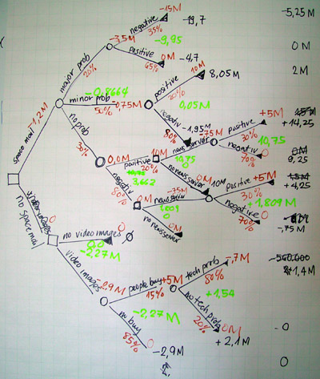
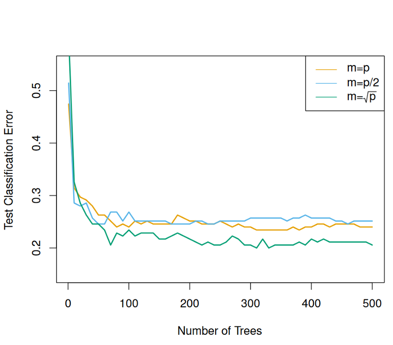
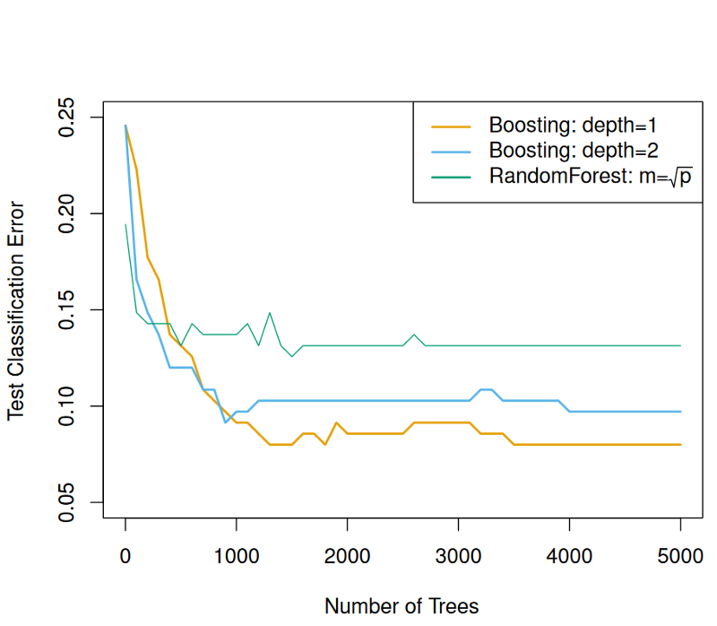
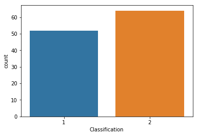
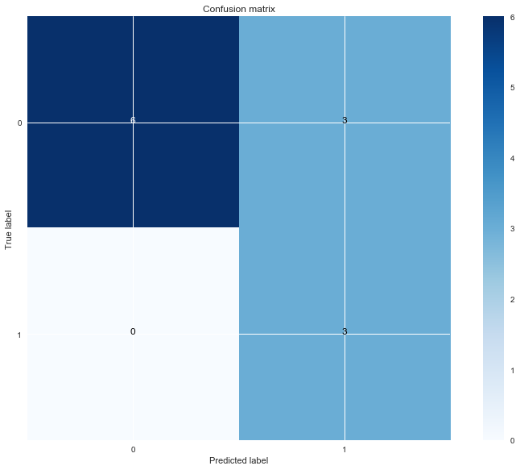
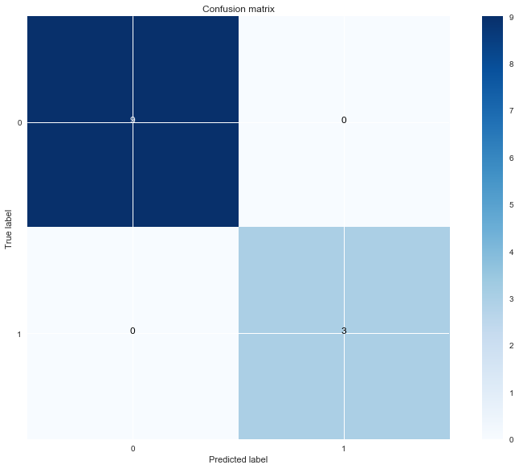
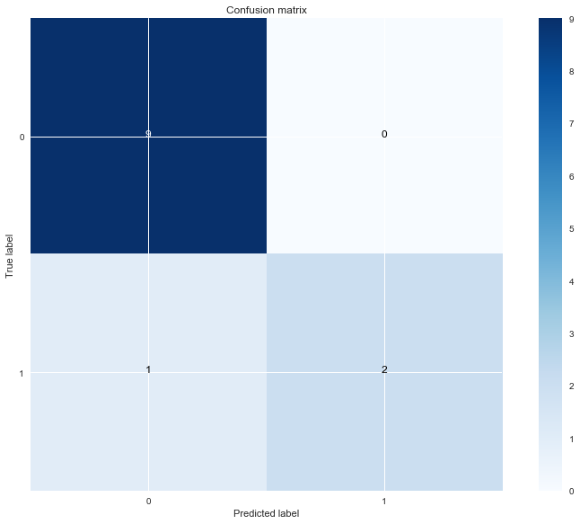
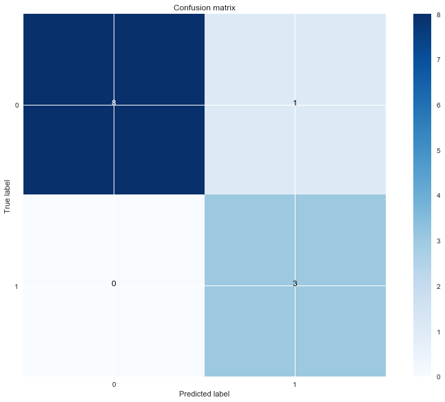

Decision Tree Classifier
Theory
Pohon keputusan adalah struktur seperti bagan alur di mana setiap simpul internal mewakili "pengujian" pada atribut , masing-masing cabang mewakili hasil pengujian, dan setiap simpul daun mewakili label kelas (keputusan diambil setelah menghitung semua atribut). Jalur dari root ke daun mewakili aturan klasifikasi. Dalam analisis keputusan, pohon keputusan dan diagram pengaruh yang terkait erat digunakan sebagai alat pendukung keputusan visual dan analitis,
Pohon keputusan biasanya digunakan dalam riset operasi dan manajemen operasi. Jika, dalam praktiknya, keputusan harus diambil tanpa penarikan kembali di bawah pengetahuan yang tidak lengkap, pohon keputusan harus diparalelkan dengan model probabilitas sebagai model pilihan terbaik atau algoritma model seleksi. Penggunaan lain dari pohon keputusan adalah sebagai alat deskriptif untuk menghitung probabilitas bersyarat.

(Dahulu dibuat Secara Manual)
Bagging, random forests and boosting
Bagging
Sebelumnya dapat menghitung standar deviasi dari jumlah yang diinginkan. Untuk pohon keputusan, variansnya sangat tinggi. Oleh karena itu, dengan agregasi bootstrap atau bagging, kita dapat mengurangi varians dan meningkatkan kinerja pohon keputusan.
Bagging melibatkan berulang kali mengambil sampel dari dataset. Ini menghasilkan B set pelatihan bootstrap yang berbeda. Kemudian, melatih pada semua set pelatihan bootstrap untuk mendapatkan prediksi untuk setiap set, dan kemudian rata-rata prediksi.
Menerapkan ke pohon keputusan, itu berarti bahwa kita dapat membangun sejumlah besar pohon yang akan memiliki varian tinggi dan bias rendah. Kemudian, kita dapat meratakan prediksi mereka untuk mengurangi varians untuk meningkatkan kinerja pohon keputusan.
Random forests
Random Forests memberikan peningkatan dari pada bagging, dengan cara mengecek mulai bagian kecil yang ada pada pohon-pohon tersebut. Seperti dalam bagging, banyak pohon keputusan dibangun. Namun, pada setiap split, sampel acak dari prediktor m dipilih dari semua prediktor p. Pemisahan ini diizinkan untuk menggunakan hanya satu dari prediktor m, Dengan kata lain, pada setiap pemisahan, algoritma tidak diperbolehkan untuk mempertimbangkan mayoritas prediktor yang tersedia!

( Kesalahan klasifikasi sebagai fungsi dari jumlah pohon. Setiap baris mewakili jumlah prediktor yang tersedia di setiap pemisahan )
Boosting
Tidak jauh beda dengan Bagging dan Random forest, namun Bossting mengkoreksi setiap pohon Ini berarti bahwa algoritma belajar dengan lambat. Setiap pohon dengan residu dari model dari pada variabel target. Oleh karena itu, setiap pohon kecil dan perlahan akan meningkatkan prediksi di daerah di mana ia tidak bekerja dengan baik

( Kesalahan klasifikasi sebagai fungsi dari jumlah pohon. Setiap baris mewakili kedalaman interaksi yang berbeda.)
Study Kasus
Banyak dataset tentang kanker payudara mengandung informasi tentang tumor. Namun, saya beruntung menemukan dataset yang berisi informasi tes darah rutin pasien dengan dan tanpa kanker payudara. Berpotensi, jika kita dapat memprediksi secara akurat jika seorang pasien menderita kanker, pasien tersebut dapat menerima perawatan yang sangat dini, bahkan sebelum tumor terlihat!
Saya memperoleh dataset di sini. Pertama, yang perlu diperhatikan bahwa dataset sangat kecil, dengan hanya 116 instance. Ini menimbulkan beberapa tantangan, karena pohon keputusan mungkin sesuai dengan data, atau model prediksi yang saya lakukan mungkin bukan yang terbaik, karena kurangnya pengamatan lain. Namun, itu adalah bukti konsep yang baik yang mungkin menunjukkan potensi nyata untuk memprediksi kanker payudara dari tes darah sederhana.
Step 1, Import package
dengan menggunakan python 3.7 library yang diperlukan :
import numpy as np
import pandas as pd
import matplotlib.pyplot as plt
import seaborn as sns
Step 2, Read Data
DATAPATH = 'data/dataR2.csv'
data = pd.read_csv(DATAPATH)
data.head()
Step 3, Classification
Mengklasifikasi data.
x = data['Classification']
ax = sns.countplot(x=x, data=data)

(Seperti yang kita lihat, ada jumlah pasien dan kontrol yang hampir sama.)
Step 4, Ploting
Sekarang, akan menarik untuk melihat distribusi dan kepadatan setiap fitur untuk orang sehat dan pasien. Untuk melakukannya, violin plots sangat ideal. Ini menunjukkan kepadatan dan distribusi fitur dalam satu plot.
y = data.columns[:-1]
x = data.columns[-1]
def violin_plots(x, y, data):
for i, col in enumerate(y):
plt.figure(i)
sns.set(rc={'figure.figsize':(11.7,8.27)})
ax = sns.violinplot(x=x, y=col, data=data)
violin_plots(x, y, data)
Step 5, Modelling
Pertama, kita perlu menyandikan kelas ke 0 dan 1:
from sklearn.preprocessing import LabelEncoder
le = LabelEncoder()
data['Classification'] = le.fit_transform(data['Classification'])
data.head()
Sekarang, 0 mewakili kontrol yang sehat, dan 1 mewakili pasien.
Kemudian, membagi dataset menjadi set pelatihan dan tes:
from sklearn.model_selection import train_test_split
y = data['Classification'].values.reshape(-1, 1)
X = data.drop('Classification', 1)
X_train, X_test, y_train, y_test = train_test_split(X, y, test_size=0.1, random_state=42)
Step 6, Matrix
Perlu menentukan metrik kesalahan yang sesuai. Karena ini adalah masalah klasifikasi,
import itertools
def plot_confusion_matrix(cm, classes,
normalize=False,
title='Confusion matrix',
cmap=plt.cm.Blues):
"""
This function prints and plots the confusion matrix.
Normalization can be applied by setting `normalize=True`.
"""
if normalize:
cm = cm.astype('float') / cm.sum(axis=1)[:, np.newaxis]
print("Normalized confusion matrix")
else:
print('Confusion matrix, without normalization')
print(cm)
plt.imshow(cm, interpolation='nearest', cmap=cmap)
plt.title(title)
plt.colorbar()
tick_marks = np.arange(len(classes))
plt.xticks(tick_marks, classes)
plt.yticks(tick_marks, classes)
fmt = '.2f' if normalize else 'd'
thresh = cm.max() / 2.
for i, j in itertools.product(range(cm.shape[0]), range(cm.shape[1])):
plt.text(j, i, format(cm[i, j], fmt),
horizontalalignment="center",
color="white" if cm[i, j] > thresh else "black")
plt.ylabel('True label')
plt.xlabel('Predicted label')
plt.tight_layout()
Step 7, Implementasi
Decision tree
from sklearn.tree import DecisionTreeClassifier
from sklearn.metrics import confusion_matrix
clf = DecisionTreeClassifier()
clf.fit(X_train, y_train)
y_pred = clf.predict(X_test)
decision_tree_cm = confusion_matrix(y_test, y_pred)
plot_confusion_matrix(decision_tree_cm, [0, 1])
plt.show()
Output
Confusion matrix, without normalization
[[6 3]
[0 3]]

Bagging
from sklearn.ensemble import BaggingClassifier
bagging_clf = BaggingClassifier()
bagging_clf.fit(X_train, y_train.ravel())
y_pred_bag = bagging_clf.predict(X_test)
bag_cm = confusion_matrix(y_test, y_pred_bag)
plot_confusion_matrix(bag_cm, [0, 1])
plt.show()
Output
Confusion matrix, without normalization
[[9 0]
[0 3]]

Random forest
Di sini, untuk klasifikasi Random forest, Menggunakan 100 dataset:
from sklearn.ensemble import RandomForestClassifier
random_clf = RandomForestClassifier(100)
random_clf.fit(X_train, y_train.ravel())
y_pred_random = random_clf.predict(X_test)
random_cm = confusion_matrix(y_test, y_pred_random)
plot_confusion_matrix(random_cm, [0, 1])
plt.show()
Output
Confusion matrix, without normalization
[[9 0]
[1 2]]

Boosting
from sklearn.ensemble import GradientBoostingClassifier
boost_clf = GradientBoostingClassifier()
boost_clf.fit(X_train, y_train.ravel())
y_pred_boost = boost_clf.predict(X_test)
boost_cm = confusion_matrix(y_test, y_pred_boost)
plot_confusion_matrix(boost_cm, [0, 1])
plt.show()
Output
Confusion matrix, without normalization
[[8 1]
[0 3]]

Conclusion
Kita telah melihat bagaimana menerapkan pohon keputusan dan bagaimana meningkatkan kinerjanya dengan bosoting, bagging, dan random forest. Tampaknya bagging memberikan hasil terbaik, karena mengklasifikasikan semua instance dengan benar.
Namun, ada yang harus ingat bahwa dataset itu sangat kecil. Meskipun itu menunjukkan bahwa kita berpotensi dapat memprediksi kanker payudara dari tes darah, algoritmanya tidak mungkin bekerja dengan baik pada data yang tidak terlihat, karena tidak ada cukup data.
References
Machine Learning Course (https://medium.com/open-machine-learning-course/open-machine-learning-course-topic-3-classification-decision-trees-and-k-nearest-neighbors-8613c6b6d2cd )
Dicision trees in maschine learning ( https://towardsdatascience.com/decision-trees-in-machine-learning-641b9c4e8052?source=search_post---------0 )
Deep math machine learning ( https://medium.com/deep-math-machine-learning-ai/chapter-4-decision-trees-algorithms-b93975f7a1f1 )
Decision trees for machine learning and data science ( https://towardsdatascience.com/a-guide-to-decision-trees-for-machine-learning-and-data-science-fe2607241956 )